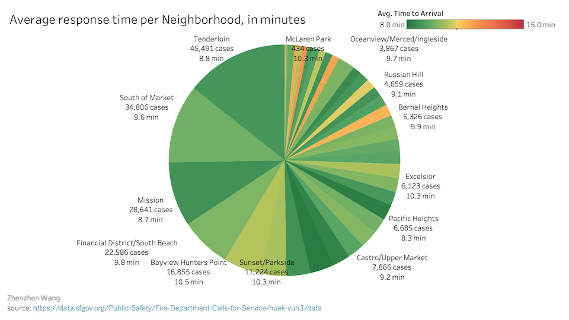
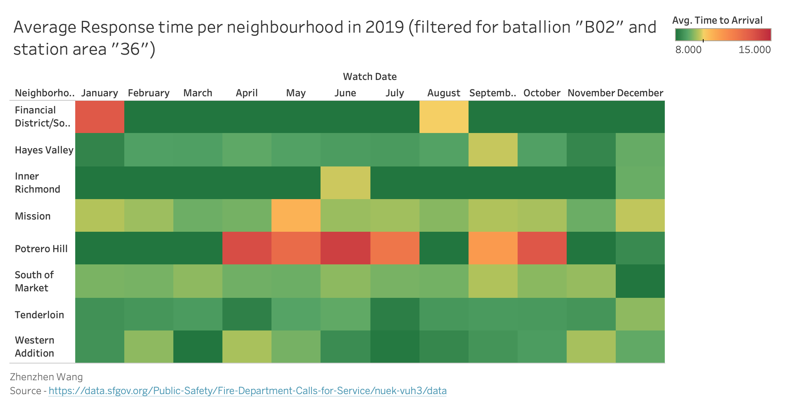

Prototype 3 - Average Response Time per Neighbourhood in Minutes
Zhenzhen Wang
Wrangling specific to prototype
Pie Chart:
Filtered By: Year 2019, Neighborhood not null and Call Type Group not null
Grouping By: Neighborhood, Call type (implementation only)
Aggregated By: Response time (Avg)
Incident Number (Sum)
Heatmap:
Filtered By: Year 2019, Neighbourhood not null, Call Type Group not null,
Batallion is "B02", and Station is "36"
Grouping By: Neighbourhood, and Watch Date
Aggregated By: Response time (Avg)
Incident Number (Sum)
Tableau Prototype
 Conclusion based on the prototype
The pie chart prototype shows number of incidents in different neighborhoods of San Francisco, and the response time from fire station for citizens having different emergency calls. From the prototype above, we can see that the Tenderloin, South of Market and Mission are the neighborhoods having the most number of incidents with all having good response time (below 10 minutes). It also shows that the fire station response time for the average case is around 10 minutes. The neighbourhood with most number of incidents is Tendelorian (45,491 cases) with an average response time of 8.8 min.
The heatmap prototype shows average response time per month of Station "36" for each Neighbourhood which lies under Batallion "B02". From the prototype above, we can say that, the response time for the Financial District in the month of January is above the average response time. This is also the case for Potrero Hill for the month of April, May, June, July, September and October. The neighbourhood of Inner Richmond, South of Market, Hayes Valley, Tenderloin, and Western Addition all have response time below the average response time.
Planned Interactivity
I have planned for following interactivities in future releases:
- Allow users to select which call type to filter by:
- Fire
- Alarms
- Non life-threatening
- potentially life-threatening
- All of the above
- When a user makes a selection, the plot will update to reflect only that subset of data.
How this visualization supports the theme?
Visualizations helps in analysing the number of incidents in different neighbourhoods of San Francisco and the average response time from the fire station after receiving the call.